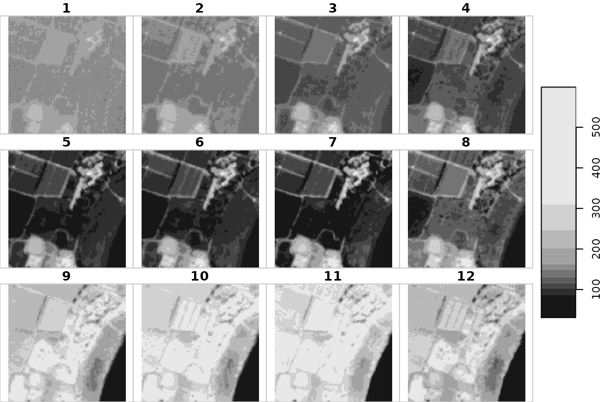
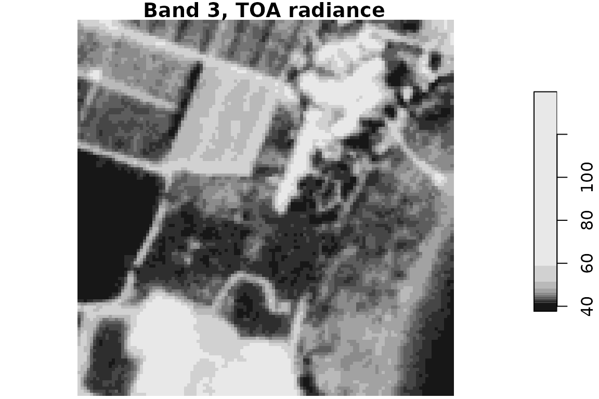
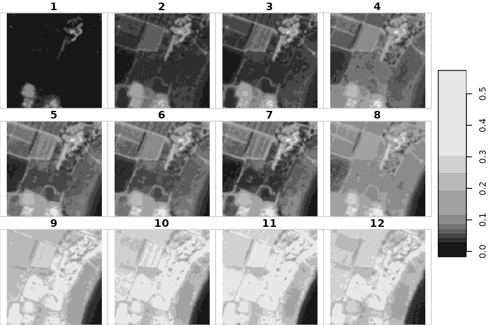
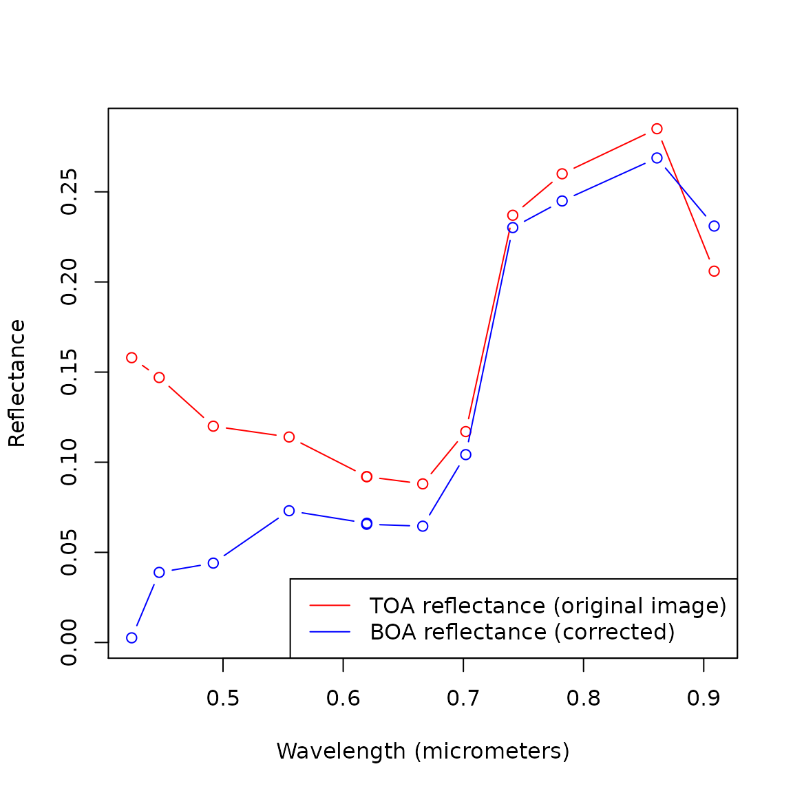

intro.RmdThe sixs package automates obtaining atmospheric correction parameters by programmatically filling up the web interface with user-provided inputs, as well as related functions to aid in atmospheric correction of satellite images in general, and Venus satellite images in particular.
The main two functions in the package are:
sixs_params for obtaining the 6S parameterstoa_rad_to_boa_refl for convering a TOA radiance image to a BOA reflectance image using the 6S parametersThe package also contains several other functions, :
get_venus_metadata for extracting relevant Venus satellite image metadata from HDR filesrad_to_refl for converting TOA radiance to TOA reflectancerefl_to_rad for converting TOA reflectance to TOA radianceTwo datasets are provided to for the reproducible examples (below, and in package docs) to demonstrate atmospheric correction of Venus satellite images:
venus1 - a raw (cropped) Venus satellite image (stars object), given in TOA reflectancevenus1_boa - an atmospherically-corrected image (stars object), given in BOA reflectancevenus1m - raw venus image metadata, the contents of the HDR file (character)venus2, venus2_boa, venus2m - same, for a different Venus imagebands - general information on Venus satellite bands (data.frame)venus_validation - parameters from the metadata and from the 6S website for all 12 bands of both images, for validation purposesPackage sixs can be installed from GitHub as follows:
install.packages("remotes") remotes::install_github("michaeldorman/sixs")
Running the sixs_params function, to get the 6S parameters, requires a Selenium server. The server connection needs to be passed as a parameter named remote_driver to the sixs_params function.
The recommended way to run a Selenium server is through docker. Detailed instructions on how to do that can be found in the Docker vignette of package RSelenium.
You can start your own local server, for example using the following expression on the command line (Ubuntu 18.04):
then connecting to the server from R to create the remote_driver object:
library(RSelenium) remote_driver = remoteDriver(remoteServerAddr = "localhost", port = 4445L) remote_driver$open(silent = TRUE)
Alternatively, you can use the demo server we set up for demontrating the package. Here is a small example where we browse to https://www.google.com and print the page title:
library(RSelenium) # Remote driver remote_driver = remoteDriver(remoteServerAddr = "164.90.191.95", port = 4445L) # Open remote_driver$open(silent = TRUE) # Browse to google.com & print page title remote_driver$navigate("https://www.google.com") remote_driver$getTitle() #> [[1]] #> [1] "Google" # Close remote_driver$close()
Note that the connection needs to be closed at the end using the last expression above. Keeping the connection open consumes RAM and eventually can make the server crash! The demo server is restarted automatically every day at 4AM. If you encounter a problem, please open an issue.
The following sections demonstrate the entire process of going from a raw TOA reflectance Venus satellite image to an atmospherically-corrected BOA reflectance image.
The input data includes:
venus1)venus1m)bands)First, we load the sixs package:
library(sixs) #> Loading required package: stars #> Loading required package: abind #> Loading required package: sf #> Linking to GEOS 3.8.1, GDAL 3.1.3, PROJ 7.1.1
Here is a printout of the raw Venus image fragment, venus1. The object contains the original information from the .tif file, cropped to a small spatial extent (to reduce image size) and using only the reflective bands 1-12:
venus1 #> stars object with 3 dimensions and 1 attribute #> attribute(s): #> refl #> Min. : 31.0 #> 1st Qu.:110.0 #> Median :150.0 #> Mean :174.8 #> 3rd Qu.:227.0 #> Max. :599.0 #> NA's :2892 #> dimension(s): #> from to offset delta refsys point values x/y #> x 1 121 736830 5 WGS_1984_UTM_Zone_36N FALSE NULL [x] #> y 1 121 3639028 -5 WGS_1984_UTM_Zone_36N FALSE NULL [y] #> band 1 12 NA NA NA NA NULL
and here is a visualization. Note that the image includes six (reflective) bands 1-12:
plot(venus1)

In case you are working with a real Venus image, rather than the sample dataset, the .TIF file can be read into a stars object with:
library(stars) # Read image r = read_stars("/home/michael/Dropbox/Packages/sixs/other/venus_sample_data/images/VE_VM01_VSC_PDTIMG_L1VALD_ISRAEL03_20190204.DBL.TIF_crop.TIF", proxy = FALSE) # Subset bands r = r[,,,1:12]
The Venus image metadata comes as an XML document in an .HDR file. File contents are stored as a character of length 1 named venus1m. Here are the first 80 characters from it:
substr(venus1m, 1, 80) #> [1] "<?xml version=\"1.0\" encoding=\"UTF-8\"?><?xml-stylesheet type='text/xsl' href='DIS"
Additionally, the sixs package includes general metadata about the 12 reflective bands of the Venus satellite, in a data.frame named bands:
bands #> band lower upper esun #> 1 1 0.40399 0.44399 1661.634 #> 2 2 0.42690 0.46690 1954.005 #> 3 3 0.47190 0.51190 1990.678 #> 4 4 0.53500 0.57500 1830.509 #> 5 5 0.59970 0.63970 1669.217 #> 6 6 0.59950 0.63950 1670.402 #> 7 7 0.65120 0.68120 1510.949 #> 8 8 0.69000 0.71400 1428.368 #> 9 9 0.73310 0.74910 1290.557 #> 10 10 0.77420 0.79020 1163.151 #> 11 11 0.84110 0.88110 965.547 #> 12 12 0.89870 0.91870 879.865
The first step is to process the HDR metadata character into a list (using the XML package), then extract the relevant metadata items to another (smaller) list using get_venus_metadata:
library(XML) l = xmlToList(venus1m) m = get_venus_metadata(l, band = 1)
Here is the list with metadata items that we now have:
m #> $date #> [1] "2019-02-04" #> #> $solar_zenith_angle #> [1] 52.45633 #> #> $solar_azimuth_angle #> [1] 156.2326 #> #> $view_zenith_angle #> [1] 12.8512 #> #> $view_azimuth_angle #> [1] 168.3401 #> #> $longitude #> [1] 35.52071 #> #> $latitude #> [1] 32.95559 #> #> $elevation #> [1] 0.325
In case you are working with a real Venus image, rather thean the sample dataset, the same result can be obtained reading from the .HDR file:
library(XML) x = xmlParse("VE_VM01_VSC_L1VALD_ISRAEL03_20190204.HDR") l = xmlToList(x) m = get_venus_metadata(l, band = 1)
Venus satellite images are provided in TOA reflectance values, multiplied by 1000. However, the 6S algorithm requires the input to be TOA radiance values.
Therefore, to proceed, the Venus image values need to be divided by 1000:
venus1 = venus1 * 0.001
In the example, we atmospherically correct a specific band (3), therefore we will also subset the third layer from the venus1 image:
venus1 = venus1[,,,3,drop=TRUE] names(venus1) = "TOA reflectance"
Here is what the TOA reflectance values in band 3 of the venus1 sample image look like:
plot(venus1)
Now, the TOA reflectance values need to be converted back to TOA radiance values (so that they can be used as input in the 6S algorithm). The conversion from TOA reflectance to TOA radiance can be done using function refl_to_rad.
Here is an example of converting the band 3 of the venus1 image from TOA reflectance to TOA radiance:
m = get_venus_metadata(l, band = 3) venus1_toa_rad = refl_to_rad( toa_refl = venus1, date = m$date, esun = bands$esun[3], solar_zenith_angle = m$solar_zenith_angle ) names(venus1_toa_rad) = "Band 3, TOA radiance"
And here is an image of the result:
plot(venus1_toa_rad)

(When the satellite image is given in radiance units, the inverse rad_to_refl function can be used to convert it to a TOA reflectance image—if necessary. The required data includes the date, esun and solar_zenith_angle, same as in refl_to_rad.)
In addition to the Venus image metadata extracted from the .HDR file and the general information in the bands table, the 6S algorithm also requires obtaining three meteorological parameters from the AERONET stations data, namely:
Here is how to obtain these parameters:
Navigate to the AERONET web page to open the available data from AERONET stations worldwide.
Choose an AEORONET station that is geographically located near your site. It is possible to click on the map several times in order to zoom in and choose the relevant station easily. For example, the screenshot below shows a list of AERONET stations in the western Middle East (Israel, Egypt, Cyprus and Greece).
Example of a list of AERONET stations
A window of meteorological data for Sede Boker site in Israel. The links for downloading the relevant data are shown in red squares
Choose the relevant period (year) on the left panel. In case the user does not choose the relevant period, the website will return data for the current year as a default. Another option is to choose a specific relevant day on the right panel; however, it this is not useful for atmospheric correction of satellite imagery since these corrections require a daily temporal resolution and not hourly.
Click on AOD Level 1.0 to download the data.
Accept the data usage agreement.
Download and unzip the data (a .lev1 file) and open the data in Excel using the option “from text” in the “data” tab.
Calculate the AOD in 550 nm: use the AOD in 675 nm (AOD_675nm column) and AOD in 500 nm (AOD_500nm column) in the formula below to calculate AOD in 550 nm:
Find the perceptible water value under the column “Precipitable_Water(cm)” that presents the water vapor (Uw) in [g cm-2].
Find the Ozone concentration value under the column “Ozone(Dobson)” that presents the O3 concentration in Dobson units. Multiply this value by 0.001 to obtain the Ozone concentration in [cm/atm].
Specifically for the image we are working with in this example, venus1, the required parameters are:
Uw = 0.665071 Uo3 = 0.2982371 opticalDepth = 0.1105934
Finally, there are some parameters required for the 6S algorithm that cannot be obtained from the image metadata or from the AERONET website. Instead, they need to be determined according to the purposes of image correction:
GroundCondition is usually "Patchy Ground".TargetReflectance depends on what the project focuses on.EnvironmentReflectance depends on surrounding cover.TargetRadius needs to be smaller than pixel size, in meters (for Venus <5.3)Here are the specific values we are going to use when correcting the venus1 image:
GroundCondition = "Patchy Ground" TargetReflectance = "Vegetation" EnvironmentReflectance = "Vegetation" TargetRadius = 0.5
Once we have all of the parameters, the remote server is set and the remote_driver object exists, you can execute the sixs_params function to get the 6S parameters.
For example, for band 3 from the venus1 image we get:
remote_driver$open(silent = TRUE) xcoefficients = sixs_params( remote_driver = remote_driver, day = as.numeric(format(m$date, "%d")), month = as.numeric(format(m$date, "%m")), SolarZenithalAngle = m$solar_zenith_angle, SolarAzimuthalAngle = m$solar_azimuth_angle, ViewZenithalAngle = m$view_zenith_angle, ViewAzimuthalAngle = m$view_azimuth_angle, Longitude = m$longitude, Latitude = m$latitude, Uw = 0.665071, Uo3 = 0.2982371, opticalDepth = 0.1105934, LowerWavelength = bands$lower[3], UpperWavelength = bands$upper[3], TargetAltitude = m$elevation, GroundCondition = "Patchy Ground", TargetReflectance = "Vegetation", EnvironmentReflectance = "Vegetation", TargetRadius = 0.5 ) #> Step 1 - Geometrical Conditions #> Step 2 - Atmospheric Model #> Step 3 - Spectral Conditions #> Step 4 - Target & Sensor Altitude #> Step 5 - Ground Reflectance #> Step 6 - Signal Source remote_driver$close()
You can use the .screenshot=TRUE parameter in the above function call for viewing the web interface throughout the process. This will create a temporary file named rselenium_screenshot.png in the current working directory.
The result is a named numeric vector with the 6S parameter values, valid for band 3 of the venus1 image:
xcoefficients #> xa xb xc #> 0.00369 0.11777 0.12263
Finally, using the 6S parameters we can convert the TOA radiance image (band 3) to a BOA reflectance image, using function toa_rad_to_boa_refl. We are using the xcoefficients, which contains the parameters we obtained from the 6S website in the previous step:
venus1_boa_refl = toa_rad_to_boa_refl( toa_rad = venus1_toa_rad, params = xcoefficients ) names(venus1_boa_refl) = "Band 3, BOA reflectance"
Here is the result, BOA reflectance in band 3 of the Venus image with started with (venus1):
plot(venus1_boa_refl)
The following code section repeats the steps demonstrated above, but executing them sequentially for each of the 12 bands, rather than just for band 3, using a for loop:
library(sixs) library(XML) library(RSelenium) # Get image metadata data(venus1m) l = xmlToList(venus1m) # Empty list to keep results result = list() for(i in 1:12) { # Rescale and select band data(venus1) venus1 = venus1 * 0.001 venus1 = venus1[,,,i,drop=TRUE] # Get image band metadata m = get_venus_metadata(l, band = i) # Convert TOA reflectance to TOA radiance venus1_toa_rad = refl_to_rad( toa_refl = venus1, date = m$date, esun = bands$esun[i], solar_zenith_angle = m$solar_zenith_angle ) # Get 6S parameters remote_driver = remoteDriver(remoteServerAddr = "164.90.191.95", port = 4445L) remote_driver$open(silent = TRUE) xcoefficients = sixs_params( remote_driver = remote_driver, day = as.numeric(format(m$date, "%d")), month = as.numeric(format(m$date, "%m")), SolarZenithalAngle = m$solar_zenith_angle, SolarAzimuthalAngle = m$solar_azimuth_angle, ViewZenithalAngle = m$view_zenith_angle, ViewAzimuthalAngle = m$view_azimuth_angle, Longitude = m$longitude, Latitude = m$latitude, Uw = 0.665071, Uo3 = 0.2982371, opticalDepth = 0.1105934, LowerWavelength = bands$lower[i], UpperWavelength = bands$upper[i], TargetAltitude = m$elevation, GroundCondition = "Patchy Ground", TargetReflectance = "Vegetation", EnvironmentReflectance = "Vegetation", TargetRadius = 0.5, quiet = TRUE ) remote_driver$close() # Convert TOA radiance to BOA reflectance venus1_boa_refl = toa_rad_to_boa_refl(venus1_toa_rad, xcoefficients) # Add result to list result[[i]] = venus1_boa_refl } # Combine to multi-band raster result$along = 3 result = do.call(c, result)
The image result is the final corrected image, now with all of the 12 bands (rather than just band 3):
plot(result)

And here is an example of two reflectance profiles for a particular pixel (80,80) in the image. The original TOA reflectance profile is shown in red. The corrected BOA reflectance profile is shown in blue:
# Extract reflectance profiles for one pixel data(venus1) toa_refl1 = venus1[[1]][80,80,] * 0.001 boa_refl1 = result[[1]][80,80,] # Plot profiles plot( x = rowMeans(bands[c("lower", "upper")]), y = toa_refl1, type = "b", xlab = "Wavelength (micrometers)", ylab = "Reflectance", ylim = range(c(toa_refl1, boa_refl1)), col = "red" ) lines( x = rowMeans(bands[c("lower", "upper")]), y = boa_refl1, type = "b", col = "blue" ) legend( "bottomright", lty = c(1, 1), legend = c("TOA reflectance (original image)", "BOA reflectance (corrected)"), col = c("red", "blue") )

Done!